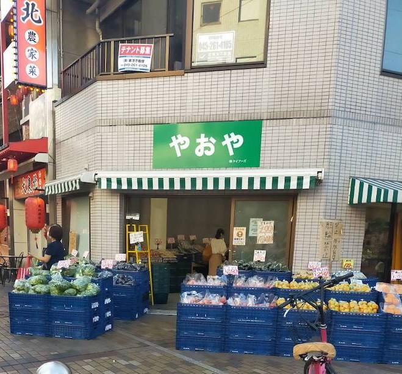
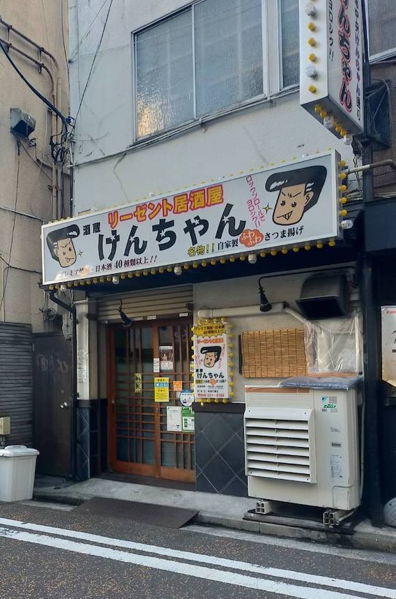
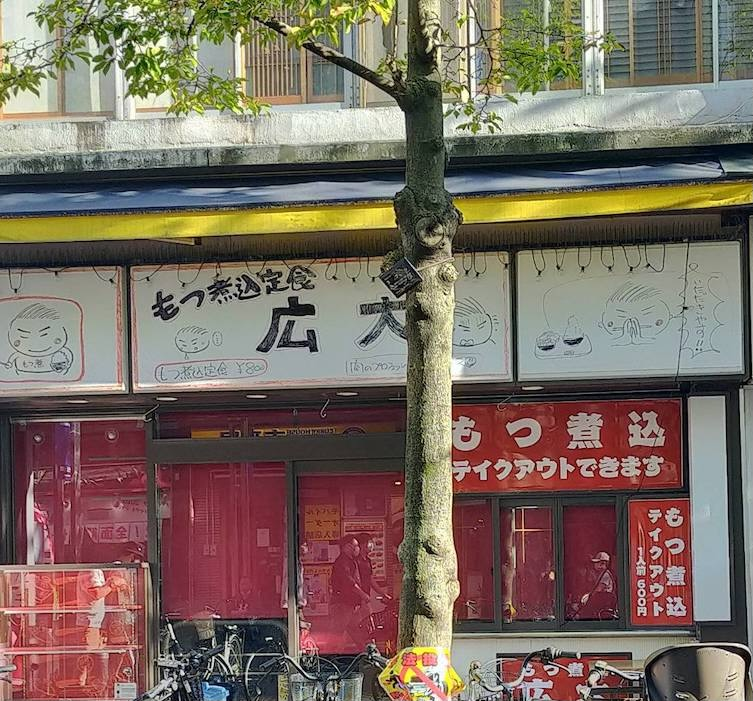
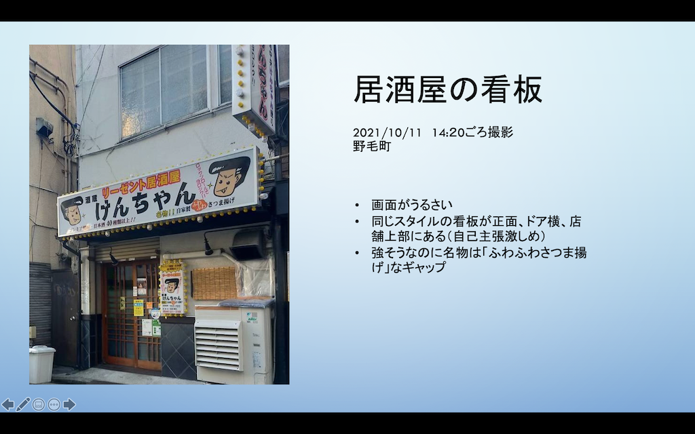

課題 -看板・サインの撮影-
- 撮影日時：2021年10月11日 午後2時〜3時
- 撮影場所：横浜市日ノ出町〜伊勢佐木町
- 撮影者：杉野真央
- 撮影機材：スマートフォン （OPPO Reno3 A)
看板１
八百屋の看板。「やおや」…ってそのまますぎるのでは。「〇〇商店」のような表記もなければイラストも付いていない。申し訳程度に右下に運営会社の表記あり。究極のシンプル・イズ・ベスト。
看板２
居酒屋の看板。１枚目と異なり、面積いっぱいに詰め込めるだけ情報を詰め込んだ感じ。同じイラスト付きの看板がドア横のほか、見切れているが画像上部にもある。とにかく画面がうるさい（褒め言葉）。
看板３
定食屋の看板。なんとただのホワイトボードにマジックで手書きしているだけだった。決して手抜きではなく、好きな時にデザインを修正できる合理性を備える。お店のお客さんも自由に書き加えられるなら面白そう。
パワポ資料

メモ
- フィールドワーク：現場に行って、特定の範囲内での調査。研究。
- 現場に行く意味：雰囲気がわかる、新たに気づくこともある、現在のことがわかる、実際に見ると違う（思い込みの発見） →ステージ１
- 自身の当たり前と他の当たり前を知る、当たり前が当たり前でない→ステージ２
- 考現学：考古学に対して、現代社会での生活に関わるものを研究すること。今和次郎が提唱した。
後の路上観察学の登場にも繋がる→フィールドワークのステージ１ - 考現学のポイント：一定の範囲を定めたら範囲内のものを全て（なんでも）観察する、
時には脱線してみる(無計画でOK)、証明でなく発見するために観察する - 定量的なデータを取ると、さらに新しい面がわかるかも
- 人間はものを概念や定義で捉える↔︎者の本質とは？
前の画面に戻る